| Home |
| I-Files |
| └ Travel |
| Guestbook |
Japan Travel Report -- 5/09/2001 -- Tales of Singing Toilets, and other Remarkable Discoveries
Section 1: A Different CitySection 2: Of Freeders and Leeches
Section 3: Shoppers Paradise
Section 4: Oh, Technology!
Section 5: A Foreigner in Tokyo
Section 6: The Countyside
Section 7: Conclusion
Dear all,
With all the misfortune happening to me lately, I must remember that the resignation of my old job had allowed me, for a full two months, to get lost and travel to a land which has put a sparkle in the eye and launched daydreams of many an armchair traveller for a long time -- Australia! The Land of Oz left me with such a deep impression of rich experience and joy that, when asked whether I would be willing to return that experience in exchange for having my old job and secure income back, I would not hesitate a second to reject.
However, before I set my foot on earth down under, I spent a week in another country which evokes exotic images in it's own right -- Japan! I had made a good friend over email in Japan, and since I was flying across the whole globe to see the kangaroos, I figured I might as well stop over to meet her and see the land that gave us the walkman, raw fish in seaweed and the condition "worked to death" as a recognized professional hazard!
One thing be said ahead: Japan is different. Those of you who have travelled extensively may share my view that the world - in the clutches or globalization and US cultural neo-colonialism - is becoming more and more homogenious. Distinct cultural identities are creaking under the weight of imported TV culture and the Nike's and H&M's of this world. Japan, while thoroughly overrun by global commerce, remains distinctly different while at the same time following every trend under the sun. It is a most fascinating place!
A note of gratitude goes to my friend Hannah, who picked me up, put me up in her small appartment, and sacrificed her whole free week to show me the city, helping me with the trains and taxis, and being a translator, as well as introducing me to her local friends. Without her, I would not have seen and experienced half as much as I did.
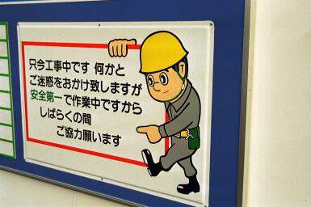 |
The drawbacks of illiteracy. He looks like he's got something important to get across, and I have no clue. Will things fall on my head soon? Are there mines on the sideway? HANNAH!!! Help!! |
My memories of Tokyo and Japan are, well, non-linear. When I focus on them, bursts of neon-light mingle with temple images and strange sounds, all at once, together, in chaos. The info-overload was immense, passage of time did at times seem warped. Hence this recount of my Japan experience is not chronological, as with previous reports, but picks up impressions, amazement and insights in a rather random essay format. I hope you like it, anyway, if not, please flame away. *smile*
I touched down at Narita International Airport after a 12 hour, deep-vein-thrombosis instilling economy class flight, which I spent squeezed in my narrow seat next to a surprisingly big Japanese guy. First thing I discovered was that Tokyo is indeed BIG. So big, in fact, that it took the bus a whopping two hours to transport me into the city proper from the airport, passing miles and miles of dense human habitation in the process. I reckon 30 million people have got to live somewhere, and yet, when you actually pass through the endless urban sprawl, it's quite a different experience. To get to work in this Goliath of cities, people habitually commute up to two hours every day - each way! Add to that the average working day of 12 hours, and go figure how much time a Japanese worker spends at his home.
That is, if you can get there at all after work. Surprisingly for a city that never sleeps, trains DO slumber away early -- they stop running shortly past midnight. So when you partied late -- you're stuck. When you worked late (or just having sat in the office until late, because leaving before your superior is supposedly career-suicide, even if you don't have much to do) -- you are stuck. Having spent the evening with mandatory after-work socializing with your colleagues -- perhaps after practicing the bonding ritual of mutual embarrassment called Karaoke -- you are stuck.
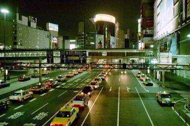 |
Tokyo by Night -- The city never sleeps. If you have a car, that is. |
I had looked into accommodations before coming to Tokyo, just as a backup option, and from that I know that most hotel rooms in Tokyo are outrageously pricey -- and hence pretty much out of reach for most ordinary Japanese citizens, be they teenagers, or mid-rank salarimen.
Yet there is a Japanese solution to the problem -- a locker hotel. In an ingenious move combining efficient use of space with easy cleaning and no-worries maintenance, people can check-in to their very own, pull-out-of-the-wall, wardrobe style sleeping locker! Providing a bed, a reading lamp and hopefully working air-condition and ventilation, it provides all the creature comforts needed, bar perhaps a door. Upon bedding down, an assistant will push the locker closed from the outside, leaving you to sweat dreams and bouts of nasty claustrophobia. I am not sure whether you can let yourself out or have to ring the assistant to pull out your locker from the outside if you wanna check out, but the experience must be truly overwhelming (and no, I didn't try). For the claustrophobic, and the truly broke teens, there is of course always the "party-till-the-trains-run-again-at-six" method, which I prefer very much.
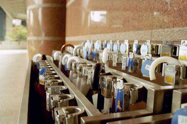 |
Not a locker hotel, but an umbrella locker. Innovative, practical, and soo Japanese. |
For many Japanese however, to play on the sarcastic, the difference between home and the drawer, at least in terms of space, may not be all that big. A 50 square meter two-room flat is considered generous for a family of four. Rents for such a place may start at 2000 USD a month, outside the city center, with open-end if you want to live more central. And that is after 10 years of permanent recession and the bottom falling out of property prices! I have been told that, pre-crash, people used to make enormous gifts (such as ornamentally packaged honey melons costing hundreds of USD) to landlords, just to be allowed to SEE good flat. I don't know what means of convincing it must have required to actually RENT a place, but if it entailed handing over your teenage daughter for a year of sexual slavery I wouldn't be surprised. Commuting far is, for the sub-rich (or childless *grin*), the only option.
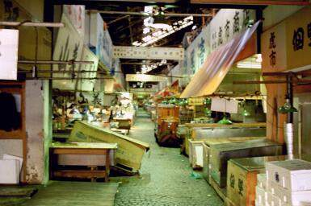 |
Tsukiji, the famous Tokyo fishmarket: If you work here, you probably don't COMMUTE at all; instead you LIVE there. It starts humming around 4am in the morning, when anything from giant tuna to miniscule shrimp are brought here and sold. It's supposedly sooo impresive, and worth the wake. Hannah and me stayed awake till 4am, paid 75 USD for the one-way taxi ride, and... it was closed. Golden Week holiday. That was what it looked like for us. No buzz. Ah, well. |
There are many great aspects to commuting mania, though. Besides keeping armies of people busy in the public transport sector (just go see Shinjuku station in central Tokyo, with it's mind-boggling number of platforms, different train systems, and dozens of entrances), commuters are also driving that biggest commercial success in the recent history of Japan's economy -- Internet-enabled mobile phones.
As everybody knows, the Japanese are way ahead when it comes to mobile phones. You think that new Nokia you have is small, let alone cool? Proud of your Motorola StarTac? Think again. Japanese phones are tiny, come with face-covering, high-resolution color screens like you've never seen in the old world, they are capable of displaying videos, stream hi-fi audio, checking email, do any transaction possible under the sun, and most importantly, can be programmed with animated "Hello-Kitty" screensavers. Pets are not allowed in your flat? No problem - download a wireless tamagotchi to your phone, and feed and nurse it (and pay very real Yen for that privilege!). If you still have some cash left, you can adorn your phone with a huge variety of add-ons, like things-on-a-string that dangle from it, fur/leather/cloth pouches in the any form you can think of (did someone say "Hello-kitty"?). Socially, you can never be cool if your phone is not, and if you don't have one, you're either dead or a luddite.
| Can you say "cool"? Then again, imagine yourself sitting on the loo, and your boss calls on the vid-phone. Unghn!! |
Whoever thinks, from reading on the workloads and social obligations or teenage exam-angst suicide, that Japan is a rather joyless place, is wrong. At least, it isn't for everybody. There are the Freeders.
Freeders are young, come in groups, often on the back of motorcycles, and adorned with the most outrageous hairstyles you'll ever see. They are the picturesque social backlash against Japanese "do-your-duty" culture. Their name is short for "Freeloaders", and freeload is what they do. Having grown up in the immense prosperity of the pre-crash eighties, they are used to luxury and absence of worries. Their parents grew wealthy with the Japanese economic miracle, and spent the money on pampering their offspring. So, instead of lining up to take their place in the strictly ordered Japanese working world, Freeders give the system the middle finger, and roam about Tokyo having fun on their parent's pockets. They are scorned and admired at the same time, like anyone who breaks free of traditional Japanese social convention.
But the freeders are not alone. Japan is changing, and another group of youngsters that shows that and in the process attract the scorn of the old generation are single, working females -- the "leeches of the nation" as they are affectionately called by the public. Instead of resigning into married life, sitting at home waiting to care for their weary husbands when they return from a hard day's work, the leeches stay single. They live with their parents, and spend the money saved on rent on a steady supply of Gucci bags, Armani costumes, and nightclub cover. Yet another clear indication that the youth of today is no good and the old values are going down the drain. :-)
In fact, it seems to me that Japanese kids in general, unlike most western-hemisphere adolescents, don't bother much with self-indulgent ambling on the meaning of life, finding their true self, or their calling. Most of them seem content to have happy, perfectly meaningless fun. Such as POSING TO BE PHOTOGRAPHED.
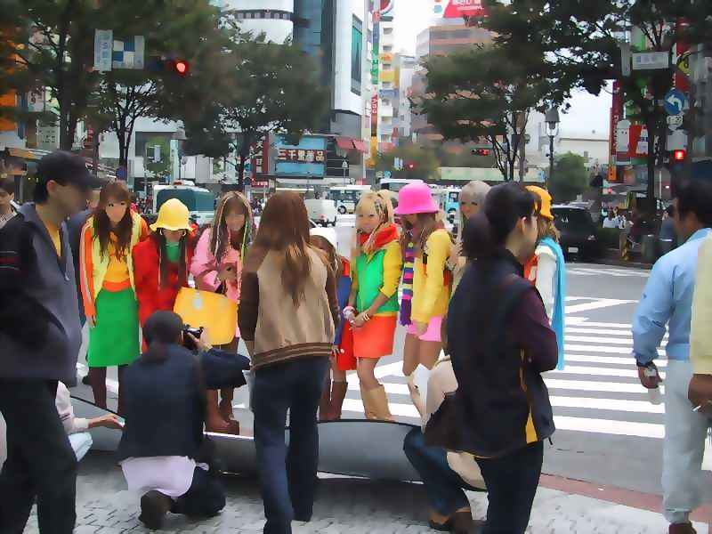 |
Dressed up for snap-shots -- which are promptly taken. And these were not the wildest outfits, by far! (replacement photo courtesy matt.onlinehome.de/japan) |
When you go the entrance to famous Senso-ji shrine, you'll stumble across a slightly surreal picture:
--> Loads of teens, dressed up in the most amazing outfits: Manga figures, nurses with super-short skirts, amputee- and disabled outfits, latex-clad, winged fantasy women, you-imagine-it-it's-there.
--> Western (and Japanese!) tourists touting their cameras, happily snapping away at the scene.
After my staggered face had regained some composure, and after an explanation from my faithful guide, I happily joined them with my Pentax! Far from being intrusive, I was doing exactly what I was supposed to - that is, taking snapshots of them. This is why they are standing there. After school, or all day. The point is to be noticed, and a photo taken by a tourist is a trophy, a recognition of "most outrageous outfit" status. How is that for a calling? :-)
If you are a Japanese kid and don't see your higher purpose in public display of latex underwear, you probably see it in shopping. Whole quarters of Tokyo resemble gigantic shopping malls, offering anything - ANYTHING - money can buy. The neonlight oceans of Shibuya or Akihabara will overwhelm all but the most hardcore shoppers, and the frantic bustle of happy shoppers crowding the place is no less than epic in scale. Consumerism is absolutely rampant in the country of ancient Asian wisdom, and happily accepted and practiced by almost everyone. Bargain hunting is not really important - having the best (=newest) stuff is what matters. In a frenzied change of models, Japanese consumer companies introduce new models of anything with but a few months in between, keeping the shopping engine humming along. But not only can you buy anything, you can also buy it in style! Takashimaya, one of the most famous Tokyo department stores, provides its valued customers with that most Japanese of services - elevator ladies! Pretty and meticulously styled (white gloves!), these happy servants will bow you into the elevator every time you use it, will kindly request your destination floor, operate the knobs and buttons for your convenience, and announce the exquisite goods on offer at each floor. They'll also most politely say goodbye and all sorts of good whishes when you leave. Believe me, that amounts to a great amount of polite conversation when you have a few different things to buy!
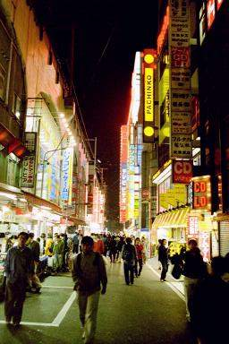 |
Akihabara -- The famous electronic shopping district. This is GEEK CENTRAL. Those cool mobile phones, game consoles that will be out in Europe in a year - this is where you can find it all. For a price; shopping here is NOT cheap, as I had to find out to my disappointment. |
In places like Takashimaya, style extents into everything - including the toilets. If you haven't seen a Japanese luxury toilet, you haven't seen Japan. In fact, the philosophical consideration of such a toilet may provide you with more insight on Japanese psyche than you can get from many other, more respectable items.
Jean-Luc Piccard would be at home on a Japanese luxury toilet. It is full of blinking lights, buttons, and displays, all nicely arranged in a control panel rivaling one on the Enterprise. Doing away with primitive western dry-wiping methodology, several buttons will control pressure and angle of the water-jet cleaning system, which will electrically unfold from under the seat once you have finished your business, and put a smile on your face with its gentle caress on your tender spots. Needless to say, there are distinctive cleaning profiles for males and females. But instead of limiting itself to your physical comfort, a Japanese luxury toilet takes care of your psyche, as well! Ever been embarrassed because of that thunderous fart escaping your bowels when your colleague was in the stall next door? Ever hoped to avoid that revealing splash noise? Worry no more. A variety of sounds to acoustically camouflage your activities are at your disposal on a Japanese luxury toilet - "waterfall", "bird songs", ... I wouldn't be surprised if you could download your own theme from the Internet on the best of models. Needless to say, the seat is heated, and on more advanced models you may determine exactly which temperature is to comfort your resting globes. So much for the illusion of western sophistication.
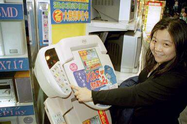 |
Interactive Multimedia Toilet, model "Jean-Luc Piccard". Wonder if it can beam... |
In fact, Japanese sophistication is an endless source of wonder. Take ATMs. Upon stepping up to one, you may well be greeted elaborately by a computer voice from speakers above, welcoming you and informing you of all the features available at the ATM, which usually go well beyond withdrawing money. The same voice will bid you goodbye when you leave. However, if you approach after 8pm, the voice will be silent. Because the ATM is closed. That's right. Japanese ATMs do close in the evening. No, I don't know why. It's just one more of these things that make you go "hmmm".
On the other hand, anything but cash is available after hours, from an army of vending machines. Food, endless varieties of cold coffee and green tea, firewood, and used female underwear. The latter you may select by pressing on the button next to the image of the girl you fancy, a girl whose biographical data next to photo appeal to you, and inserting a significant amount of Yen. Hygienically vacuum-packed, the underwear of your choice will be dispensed for your pleasure. I have been told that quite a few high-school students supplement their pocket money by providing the goods. While this may strike you as rather unusual, it may overall still be nicer than supplementing your pocket money by sleeping with rich, old men -- a practice that is supposedly fairly rampant at many high-schools, as well.
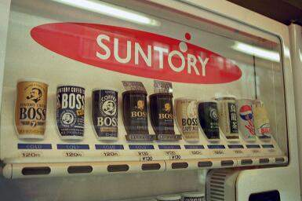 |
3C - "Cold Canned Coffee" - in numerous incarnations, available 24hrs. Just like anything else that someone ever stuck in a package. |
Surprisingly then is the fact that it is Gai-jin, foreigners living in Japan, who have the reputation of being pretty perverted and sex-crazy. Never mind the whole indigenous sex industry - while the services are happily provided, it is simply not something talked about. Take for example love hotels. This is where teens still living with their parents who lack the space to do it at home, or anybody looking for a different environment to play, can rent theme-rooms by the hour, complete with dildos, enema equipment, handcuffs and whips. They are well accepted and used with great ease, perhaps not least because rentee and concierge discreetly never get to see each other, since the two are separated by a black screen, or because the "concierge" is a machine right away. I have also been told that they are also quite popular with backpackers as cheap accommodation - hey, they are even listed in the Lonely Planet! :).
Being a Gai-jin in general is a pretty surreal experience in Japan, anyway. You will always be an oddity, an abnomaly sticking out. At best you are a revered guest, pampered and treated extremely politely. You could be put on a pedestal like a rock star and admired (are you blond? Tall? Blue-eyed?), or you could be despised and shouted at (like it happened to my friend and me in the subway: apparently we were irritating a Japanese man with our English conversation, so he barket at my friend, pushed her rudely away from the door where she was standing, then at the next stop got off, just to re-enter the same train in another wagon further back, so he wouldn't have to bear our presence!!).
I doubt you will never BELONG to Japanese society, with all its written and unwritten rules, however much you try, however fluent you speak the language. Even third generation Japan-born Koreans, who look Japanese, speak Japanese and may even think Japanese, are not accepted as Japanese, since they have no Japanese blood. The cultural arrogance towards anything non-Japanese is actually quite staggering, and the tolerance to derivation is pretty-much non-existant.
Not least as a result of this, many Gai-jin give up trying to integrate and live in a complete "expatriate parallel world" in Tokyo, without having to really interact with many things Japanese at all. At a party I met a young guy working for Deutsche Bank Tokyo, who had been here for several years and proudly pointed out that he doesn't speak a single word of Japanese. There is a surprisingly large number of expats in Tokyo who have nothing much good to say about their host country, and openly admit to staying only for the money. It is scary.
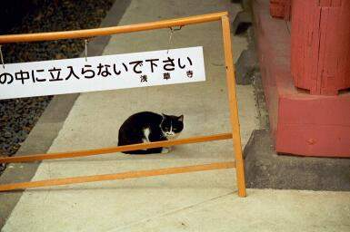 |
Slightly lost. Sometimes being a Gai-jin feels just like that. |
And yet... One day an expat friend and I got lost somewhere in Shibuya, looking for a club that was supposedly cool.
You have to know that, in Tokyo, there are no street names. Amazingly for a city of it's magnitude, only the very major city highways have names, once you veer off into the side-streets, there is nothing to guide you! One of the great mysteries of Japan is how their postal service works. Apparently the postmen know the physical location of the apartment houses (which have names, usually) so he doesn't need street names. If you're not a postman, you help yourself with directions like "turn off [insert big street] at the third street right after that 7-Eleven with the little temple next to it, walk down two houses, then turn left by that funny looking yellow house" and so on. Anything advertising something with a location, like a flyer for a club, has a little map on the back, so potential clients can actually find the place.
Well, our flyer had a map, too, but we couldn't quite figure where we were in the first place, so we were clueless.
Suddenly, someone tapped me on the shoulder, and asked in English: "Can I help you?". I turned around, and there was this young Japanese chap, with a smile. He'd seen us wrestle with the map, looking lost, so he just approached us (something VERY un-Japanese to do!). We explained our dilemma, and after struggling for a while himself (made us feel a bit better, apparently this was not much easier for a local) he figured out the way. And then insisted on WALKING us, nearly half a mile, down the road to our location! Amazing.
So it's not all bleak for a Gai-jin in Tokyo, and I guess with some perseverance, everybody can integrate somewhat. It is worth the effort to try and explore the deeper realms of Japanese culture! It can offer insights that cannot be found elsewhere, as it celebrates a happy marriage of the old and new. Just as Tokyo staggers you with yet another super-modernist accomplishment, you can stumble across the old Japan of the Shoguns, Bakufu and Samurai, right in the midst of it all. And it's not dead, preserved remnants of the past -- the traditions, customs and religion are very much alive. A kid that you just saw dancing Makarena for points in front of a motion-sensing screen at a game-arcade machine may be off to the shrine just afterwards, sacrificing and praying for success at the final exams at school. Boxed in between the super-modern shopping center and the subway station with the automated trains you can find a serene, traditional temple. Step inside, and the crazy rush outside disappears. The monks in their robes do their chores, pray, read scripture. And then, after duty, they might well play Super Mario on their Color Gameboy on the subway ride home. Truly remarkable.
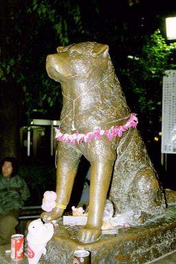 |
Hachiko, Tokyo's most famous dog. His statue in front of Shibuya Station is Tokyo's favourite rendezvous point, and holds one of it's most charming legends. It doesn't date back all the way to the shogun age, though.
Hachiko was the faithful pet of Dr. Eisaburo Ueno, a professor at Tokyo University, who lived in Tokyo's Shibuya district, and commuted by train to the agricultural campus out-of-town. Every night, Hachiko awaited the return of the professor at Shibuya station. On May 21, 1925, Dr. Ueno did not return to Shibuya because he had suffered a stroke and died at the university. Hachiko was then eighteen months old. For the next nine years, Hachiko returned to the station and waited for his beloved master before walking home, alone. Nothing and no one could discourage Hachiko from maintaining his nightly vigil. It was not until he followed his master in death, in March l934, that Hachiko failed to appear in his place at the railroad station.(From: www.media-akita.or.jp/akita-inu/akitas-introd-2E.html) |
However, who has been to Tokyo and thinks he has seen Japan, could not be more wrong. In fact, Tokyo is quite an anomaly within Japan, and since I was told that you must have been to the countryside to have seen the "other Japan", I joined a few friends of my host on a trip to the mountains.
Just "going off somewhere" without reservations and a package though is not really done in Japan (and probably not advisable either). So off I was to our travel office of choice. First thing the desk lady did was blown me off my chair - with the price. One return train ticket for a three-hour ride(mind you, an ordinary slow train, not the Famous Shinkhansen Bullet Train), and one night at a Ryokan-style hotel, discount group rate at 5 people to a room - that'll be 300 USD.
Uff.
When I had picked myself up again, I decided spontaneously that the chance had to be grabbed so I comforted my crying wallet and dished out the banknotes. The lady spent the next 20 minutes making sure that I had understood that I was to use train A (that had reservation-free seats) instead of train B (which hadn't) for fire and brimstone would hail down upon me should I mistake one for the other. After she was satisfied with my assurances that I had indeed understood, she handed me the tickets, and I was ready to hit the countryside.
Next day, after navigating to the correct train with the help of my friend, I found my seat and rolled off. My fellow travellers had gone ahead on train B, for they had the magic reservation slips (they had booked way ahead - and I had not).
I rolled through sprawling Tokyo for what seemed like ages, and then through increasingly lush and pretty landscape. At last, I reached Matsumoto, which greeted me with a comfy 25 degrees Celsius and sunshine - a welcome change after the constant rain in the capital.
Matsumoto, one must know, enjoys fame for two things: an old famous samurai castle, and a more recent but equally famous massacre. It was here that the Aum Shinrikyo Cult had a test drive of its weapons of mass destruction: in 1994 they killed 7 and injured 200 Matsumoto citizens in a vicious Sarin nerve gas attack. It was the training exercise for the more notorious second Sarin attack a year after on the Tokyo subway, which killed 12 and injured 6000 commuters. Take a deep breath...
At last, I rejoined my travel companions. To our amazement, we were told that no buses currently ran in the direction of our hotel "because of the snow" (snow? At 25C? Mhm..), and that the hotel's courtesy bus would come pick us up in three hours. So we went off to explore the town before moving on to our more remote mountain hotel.
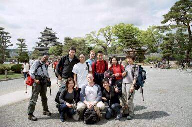 |
Our Fabolous Travelling Bunch! |
Interestingly, in most countries I know there would have had to be a guard there, to keep some shady entrepreneur from fishing at night and riding off into the Caribbean with the proceeds from selling the people's carp. Not in Japan. Seems no-one would have thought of that. The carp are still there, of course. Crime free society has something to it.
The castle itself was worthwhile, if only to witness the gigantic stream of Japanese (!) domestic tourists, complete with all the usual photographic equipment and in their socks (you have to take off your shoes at the entrance), that slowly but irresistibly made its way through.
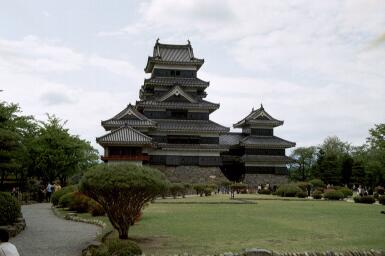 |
The famous Mastumoto Castle. No fear of Sarin gas when we were there, thank God. Aum's leader is in jail. |
With all the ancient history, the tech-craze of Tokyo was fading in my mind - until, right next to Matsumoto castle, we were treated to a gem of Japanese technological ingenuity - the Ice-cream robot! Fully automatic, truly precise, completely superfluous, yet a true representative of present-day Japanese philosophy. One large vanilla, please!
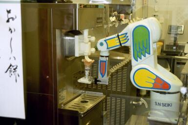 |
The world, 2100: "Remember when there were those odd but charming icecream sellers? Oh, the glorious days of old!" |
Finally our bus arrived, and we were off into the Nagoya mountains. Higher and higher up went the bus. It was then that we begun to understand why no buses were running. Because of the snow! In Matsumoto we had enjoyed sunshine and a pleasant temperatures; a while into our mountain drive, our bus disappeared in dense fog, and when we could see the ground again, it was completely covered in snow. The last stretch of the road to the hotel was barely passable. When the bus finally stopped, it was because it had to. There was no more mountain to climb, we were literally on the top!
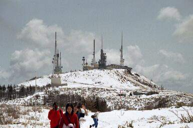 |
Can't go no higher. We've reached the top! Yes, the hotel is right up there between the mutant antennas :) |
The hotel sat right there, at the crest of perhaps the highest mountain in the area, perched next to a weather station and various humongeous antennas.
What looked like a fairly ordinary hotel from the outside turned out to be a traditional Ryokan-style Japanese Inn. We were in for a treat, which should be one of the most memorable hotel experiences I've ever had.
So what's different then about a traditional Ryokan-style inn? Anything there you can't get at the Hilton? You bet. In fact, it was there at this inn that I felt most strongly that Japan is different.
Curiously, despite all honorable tradition and historic references, when I think about the ryokan, the first thing popping up in my head is -- slippers. Japan may be in a recession, but as long as there are Ryokans, at least the slipper manufacturers will never go out of business! When we entered the inn, a member of the staff (I believe, actually a member of the family who runs the ryokan) bowed us in, and everybody there shouted "irrasshaimase" - Welcome! - at us. Then the ryokan-typical shoe-swapping routine begins. We were told to take off our shoes, and swap them for in-house slippers (in our case, a CUTE pink! :) ). We were led to our room (which, at a ryokan, is often share between a few people; 5 in our case) by the hostess. Before we were allowed to enter, we had to swap our "in-hotel" slippers for "in-room" slippers. The room, which is laid out with tatami straw mats, was devoid of any furniture but a low tea table (and calligraphy rolls at the walls). Only at bed-time will a maid come and lay out futon sleeping mats that, until then, were hidden in wall closets. In the morning, after you've gotten up, they'll re-store them.
This arrangement stems from ancient times in Japan, but is continued also in many homes until today, since space is too precious in most Japanese homes to be occupied by unused furniture (such as beds) over daytime. Now imagine someone folding away your four-poster at the Hilton!
Laid out for us were also our very own in-room and out-of-room robes: The Yakuza and the Tanzen. So we happily dropped out clothes, and slipped right into our comfy Yakuzas. Aahh.
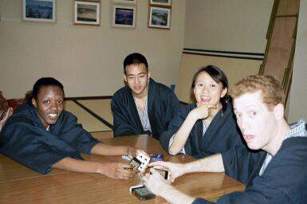 |
These robes are sooo comfortable. We loved them. Hey, and stylish, too! Couldn't get myself to snatch one, though. *grin* |
When we'd made ourselves comfortable, we decided to enjoy a cup of green tea together, sitting at the low tea table which is heated so your feet won't get cold. Inevitably, after a while I needed to use the bathroom. But behold! Of course "in-room-" slippers doesn't mean "in-bathroom" slippers!! So, dutifully, I slipped off my in-room slippers and slipped into the brightly colored "loo-slippers". To remember: When you've finished that magazine article, plus your business, and get ready to leave the house of relief, be alert, for your must leave the loo-slippers for the next loo-occupant, and slip back into your in-room slippers. The ignorant person (read "Gai-jin" in most cases) reveals himself by carelessly slopping about the inn in his bright loo-slippers which he's forgotten to swap after business. What an embarrassment!
Alas, this is not where the slipper business ends. There are the "ofuro" - communal hot baths. They are the pride of every ryokan. Virtually every ryokan has one, most have at least two - one inside, and one outside ("roten-buro"). Our Ryokan had two, also. So after tea, we decided to head straight into the water. And guess what: there are ofuro-slippers! :) So we divide up in gals and girls, swap into the correct footwear, and enter the realm of steam and boiling hot water.
Note: Yes, we divided up. Blame the Portuguese. Because this wasn't always like this. In old-days Japan, ofuro used to be co-ed. Men and Women were relaxing together in one bath, and I imagine that, besides being cheaper since you didn't have to build two baths, it was a lot more fun, too. But then came the Portuguese missionaries, and hammered the unfortunate notion into their poor converts heads that there was something sinful about this. In later days, Tokugawa Ieyasu, the Shogun who united all of Japan in the Edo Period, did the only correct thing, which was execute half of the lot and confine the rest in Nagasaki, where they were allowed to trade, but were told on pain of death to keep bathing (and other) traditions intact. Unfortunately, the idea of sexual separation at bath time had gotten hold by then, so there are very few coed ofuros left today.
As I had already found out in a communal bath in Tokyo, you wash BEFORE you enter the bath. This is very sensible indeed, since everyone shares the same water, and having your neighbor's skin particles, soap or shampoo foam swim by you when you're trying to relax is not the most pleasant concept. So we scrubbed and washed, and when we were clean, slipped into the water. The water was great, hot but not boiling (in the Tokyo inner city ofuro, the water was a scalding 47 degrees C., which cost me a good 10 minutes of timid toe-in-the-water testing before I managed to "go lobster" and boil for a while).
Best of all, a huge panorama window offered dream-views off the mountains into the valley and onto the ridges beyond! Sit, soak, dream, marvel at the peaks, and doze a while - I love Ryokans!
| View from the hot bath! Can you imagine EVER wanting to leave? Well, I can't. Can you say "mega-wrinkly-skin"? ;-) |
That night, we feasted on a sumptuous set dinner, did some more soaking, and the next day we actually went on a little crest hike. Besides the stunning scenery to marvel at, there were also two more insights on Japanese culture in store for me. First, we met a hiker wearing a "surgical style" mouth mask. Loads of people in Tokyo wear these, in fact, and I was always surprised about that since, despite the bad smog reputation, Tokyo air isn't actually that bad. But here, up on the mountain? In the most crystal-clear, clean air imaginable?? Mentally labeling the masked hiker with a nice "nutcase" sticker, I nevertheless asked one of our Japanese friends -- and found out that it was actually me who had his numbers wrong! "He has a cold, and he doesn't want to infect others when he coughs, hence the mask". Stupid me, I never thought of that. Gai-jin, no sense of community. Oh, well. Never mind that I'd go nuts having to wear one of those under peer pressure in the office, and I doubt it is terribly beneficial to the masketeers' health to inhale their own germs for re-use all the time. But what can I say, Japan is different.
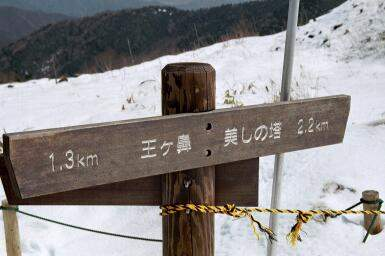 |
Wonder if it says: "Can be traversed in high heels"... |
Furthermore, we met a lady on the muddy hiking trail, happily slogging along wearing a heavy and most-expensive looking fur coat, complemented by a set of amazingly hike-suitable stiletto high-heels!! Both bore the telling mud crusts of healthy outdoor activity. This time I asked first, in case I had missed something. I was told that, yes, she was indeed wearing these to look properly lady-styled on the hiking trail, and, no, this was not an uncommon sight. Ah, Japan, trend-setting even in hiking apparel! :) To by fair, our Japanese friends thought she had a screw loose, too, which goes to show that Japan isn't completely homogeneous, after all.
Anyway, after the hike and a few more pleasant hours throwing snowballs and mudding around, we returned to Tokyo, where I spent a few more days, before ultimately moving on to Australia. As you would have guessed by my previous novellian efforts, there was much more to strike the unprepared European mind.
There were things like the "Pink Elephant" theme restaurant, where ALL waiters yell, in unison, a hearty "irrasshaimase" at EVERY new customer entering. Yes, you DO remember the greeting after the meal. Educational dining. :)
Or facts like that one, that the more money you decide to spend at the temple, the better "service" you get from the priests, resulting in a more or less "direct line" to the Gods. Prayer as a matter of investment! Well, actually, not all that different from good old European Catholic Church style, if I may remark, and yet it does amaze me.
If I was to recount every snipped of puzzling info that stuck to my brain in that eventful week, you'd still be sitting reading this tomorrow, or, more likely, happily drag-and-drop this product of my literary ambition over that useful "trashcan" icon on your desktop way before finishing...
So instead, I say: Go there, and check it out for yourself! You'll feel overwhelmed, at times scared, but always a lot wiser after visiting Japan. The one week in the Land of the Rising Sun probably packed as many single impressions as the whole 6 weeks of Australia together. I will have to return some time soon - to learn some more -- and pick up one of those cool toilet seats, which I'm sure will play MP3's by the time I get back.
Sayonara and all yours,
Ingo
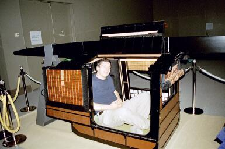 |
Travelling in style. One clap of the hands, and those carriers speed up. Don't you love comfort? |